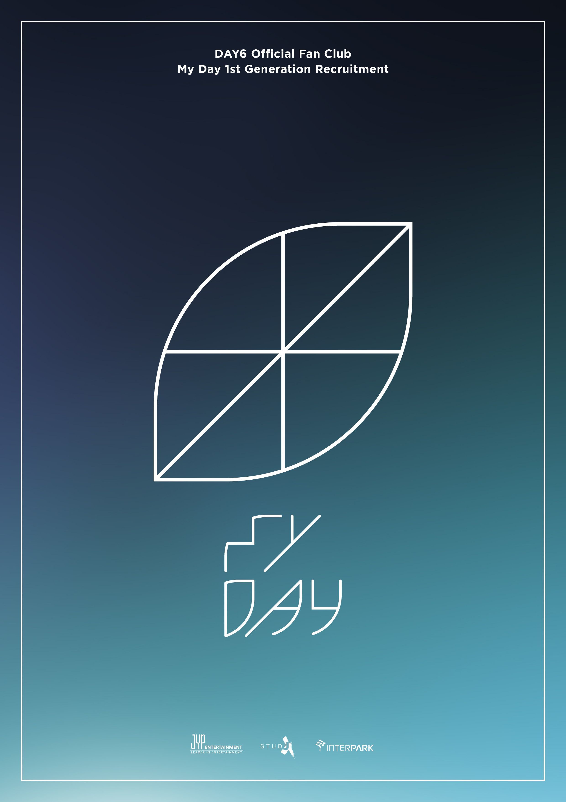

팬덤

JYP엔터테인먼트 소속 밴드 DAY6의 팬덤. DAY6와 팬들 서로가 서로의 하루를 채워줄 수 있는 소중한 존재라는 의미를 담고 있다. 줄여서 '마데'라고도 부른다.
현재 1기, 2기, 3기, 4기까지 모집했다. 이름이 생긴 초기에는 멤버들, 특히 도운이 가끔 하루들, 하루짱이라고 부르기도 했다.
고정된 로고 없이 잎사귀 혹은 레몬 모양의 로고가 새로운 기수 때마다 하나씩 추가되고 있다. 4기부터는 4잎이 되면서 네잎클로버 모양이 되었다.